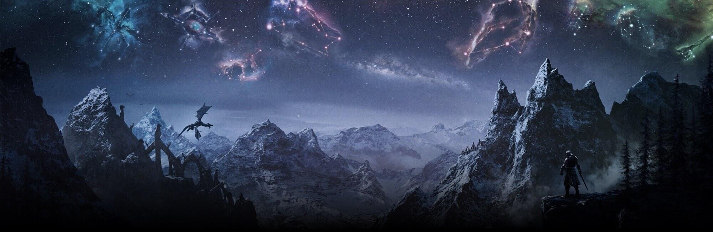

Comieza tu aventura

The Elder Scrolls V: Skyrim es un ARPG del tipo mundo abierto desarrollado por Bethesda Game Studios y publicado por Bethesda Softworks. Skyrim es la quinta entrega de la serie The Elder Scrolls de videojuegos de acción y fantasía, y es posterior a The Elder Scrolls IV: Oblivion y predecesor de The Elder Scrolls Online. La historia de Skyrim se centra en los esfuerzos del personaje, Dovahkiin (sangre de dragón), para derrotar a Alduin, un dragón/dovah que, según la profecía, destruirá el mundo.